Oppstart Power Factory#
Etter at man har åpnet Power Factory er første steg å lage en modell av kraftsystemet.
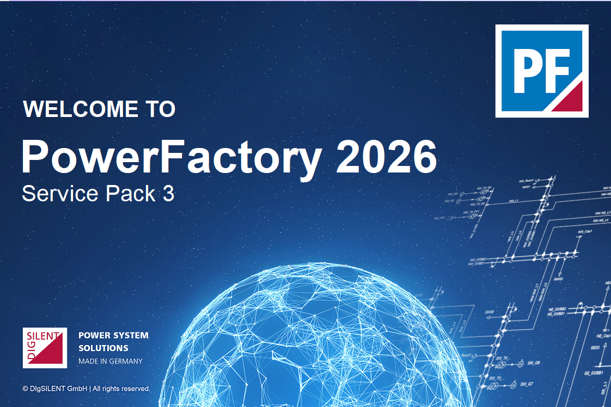
Ved den tomme vinduet i Power Factory starter man modelleringen ved å klikke på File og deretter New > Project
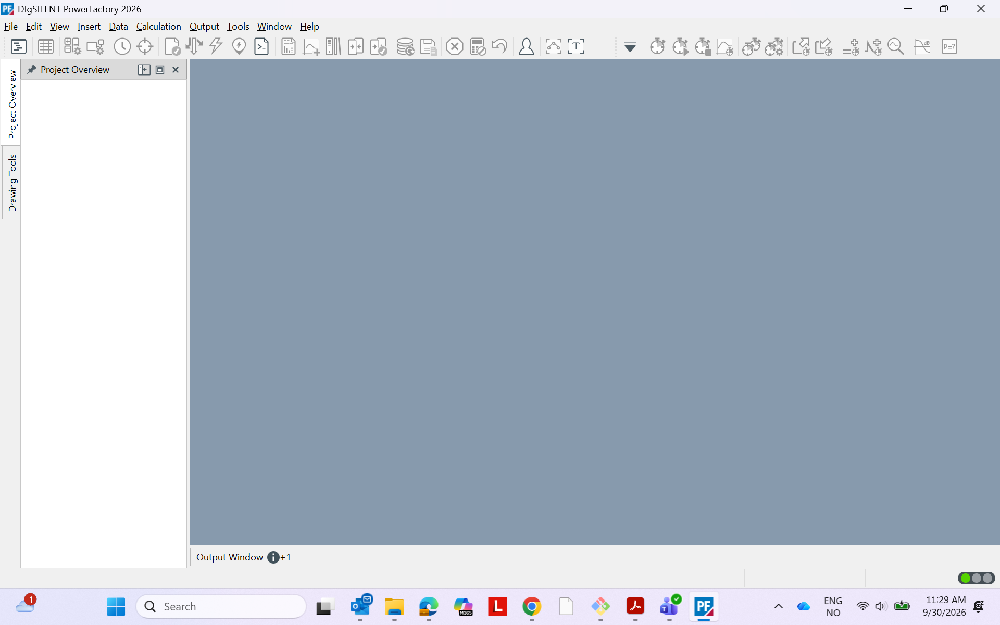
Da kommer man til et nytt vindu med et Basic Data- tabulatur der man kan navngi prosjektet. I dette tilfellet kaller vi prosjektet Start1
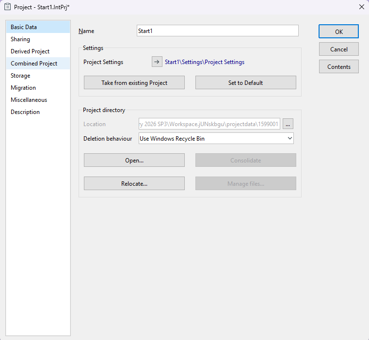
Etter å ha klikket OK kommer et Grid- oversiktsvindu, der man kan navngi nettverket (Grid) og nominell frekvens Hz.
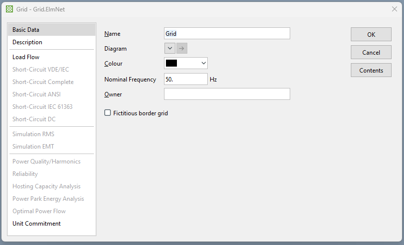
Nå er nettverk og prosjekt definert og modelleringsvinduet er aktivert. I dette vinduet har man tegneverktøy drawing tools, verktøykasse toolbox, sideoppsettet page layout, og diagrammet diagram.
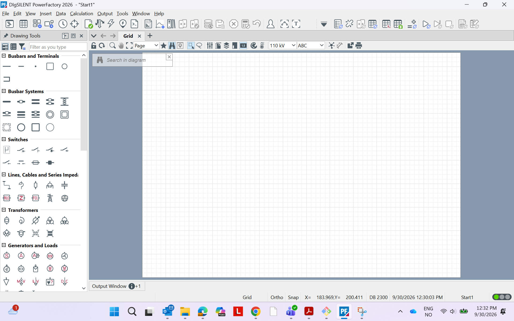
Komponenter i PowerFactory#
Samleskinner og tilkoblingspunkter#
Samleskinner (Busbars)
Tilkoblingspunkter (Terminals)
Brytere#
Effektbrytere (Circuit Breakers)
Sikringer (Fuses)
Linjer, kabler og serieimpedanser#
Luftlinjer (Lines)
Seriereaktor (Series Reactor)
Dupleksreaktor (Duplex Reactor)
Seriekondensator (Series Capacitor)
Serie RLC-filter (Series RLC Filter)
Felles impedans (Common Impedance)
Feilstrømbegrenser (Fault Current Limiter)
Linjekobling (Line Coupling)
Kabelsystem (Cable System)
Transformatorer#
Toviklingstransformator (2-Winding Transformer)
Autotransformator (Auto-transformer)
Spenningsregulator / Trinnregulator (Step-Voltage Regulator)
Treviklingstransformator (3-Winding Transformer)
Fireviklingstransformator (4-Winding Transformer)
Flerviklingstransformator (Multi-Winding Transformer)
Boostertransformator (Booster Transformer)
Enfaset boostertransformator (Single Phase Booster Transformer)
Induktiv DC-kobling (Inductive Coupling DC)
Generatorer og laster#
Synkrongenerator og synkronmaskin (Synchronous Machine)
Asynkronmaskin (Asynchronous Machine)
Dobbeltmatet induksjonsmaskin (Doubly Fed Induction Machine)
Statisk generator (Static Generator)
Vindgenerator (Wind Generator)
Batteri (Battery)
Brenselcelle (Fuel Cell)
Solcelleanlegg (PV)
Likestrømsmaskin (DC Machine)
Generell last (General Load)
Mellomspenningslast (MV Load)
Lavspenningslast (LV Load)
Tilknytningsforespørsel (Connection Request)
Likestrømslast (DC Load)
Solcellepanel (PV Panel)
Toglast (Train)
Kilder#
Eksternt nett (External Grid)
Vekselspenningskilde (AC Voltage Source)
Vekselstrømkilde (AC Current Source)
Likespenningskilde (DC Voltage Source)
Likestrømkilde (DC Current Source)
Impulskilde (Impulse Source)
Shunt-elementer og filtre#
RLC-element
RL-element
Kapasitans (C)
RLCR-filter
RLCCR-filter
Harmoniske filtre (Harmonic Filters)
Statisk VAR-system (Static VAR System)
Kraftelektroniske komponenter#
HVDC-anlegg (High Voltage Direct Current)
Likeretter (Rectifier)
PWM-omformer (PWM Converter)
Mykstarter (Soft Starter)
TCSC (Thyristor Controlled Series Capacitor)
SSSC (Static Synchronous Series Compensator)
DC/DC-omformer (DC/DC Converter)
DC-ventil (DC Valve)
Tyristorbasert DC-ventil (DC Valve Thyristor)
IGBT-basert DC-ventil (DC Valve IGBT)
MMC-ventil (Modular Multilevel Converter Valve)
AC/DC-omformer (AC/DC Converter)
Innsetting av komponenter i nettmodellen#
Hver komponent kan velges fra tegneverktøyene (Drawing Tools) og deretter legges til modellen ved å klikke på ønsket plassering i Diagrammet.
verktøykassen (Toolbox) i PowerFactory.
Seksjon 4 viser selve nettverksdiagrammet (Grid Diagram), hvor komponentene plasseres og kobles sammen.
Modellering i Power Factory#
I denne delen presenteres en trinnvis modellering og stasjonær lastflytanalyse (load flow) av en enkel modell.
Velg to Single Busbars, ett External Grid og én General Load fra tegneverktøyene for å tegne kraftsystemet
Etter at samleskinnene er plassert, velges 2-Winding Transformer, som deretter installeres i diagrammet for å fullføre modellen.
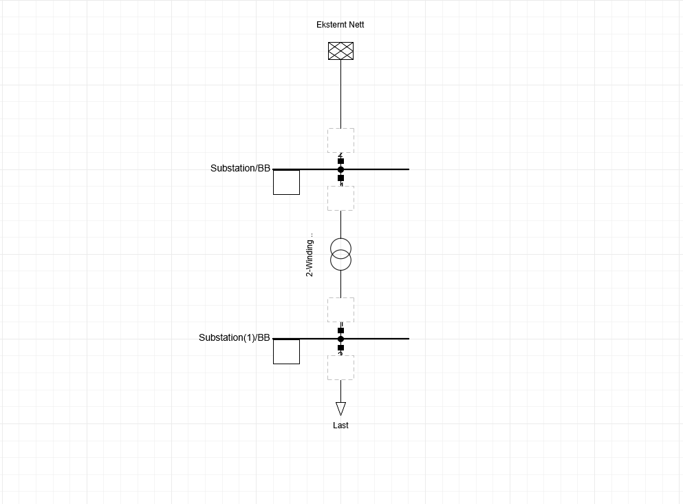
Tilkoblingspunkter#
De blå markørene nederst i felt 2, 3 og 4 viser at disse feltene ikke er ferdig koblet til komponenter ennå.
De fungerer som plassholdere hvor du senere kan koble:
kabel
linje
transformator
generator
last
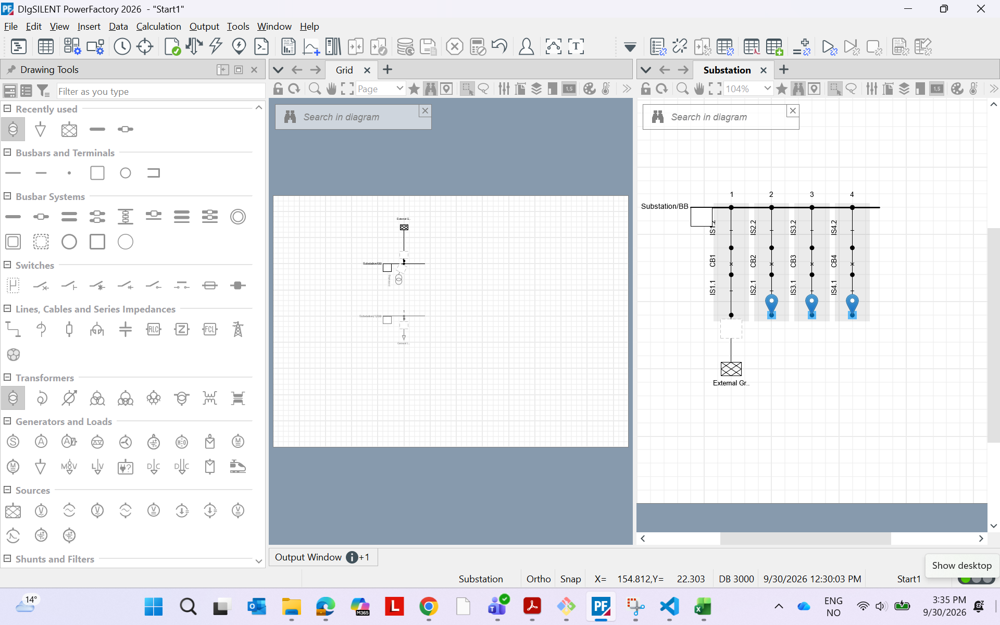
I PowerFactory er det etter opptegning av nettet obligatorisk å angi type og egenskaper for hver komponent. Dersom dette ikke gjøres, kan det oppstå feil ved senere analyser.
For å gjøre dette dobbeltklikker du på samleskinnen som representerer lastsiden og endrer spenningsnivået til 10 kV.
Samleskinnen som knyttes til det eksterne nettet skal ha en nominell spenning på 110 kV.
Ved å dobbeltklikke på transformatoren åpnes egenskapsvinduet for transformatoren.
Deretter velges New Project Type, og nytt vindu åpnes.
Transformatorens type skal deretter defineres slik figuren viser, før du klikker OK.
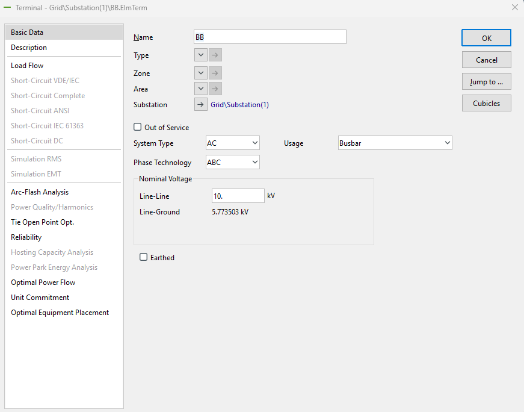
“Den nominelle spenningen og/eller faseteknologien er endret. Vil du oppdatere nominell spenning/faseteknologi for alle interne terminaler i stasjonen ‘Substation(1)’?”
Denne meldingen kommer når for eksempel har endret:
samleskinnespenning fra 110 kV til 10 kV fasekonfigurasjon (1-fase, 3-fase osv.) spenningsnivå i en stasjon
Velger du Yesvil PowerFactory tilby å oppdatere alle tilknyttede interne terminaler automatisk slik at hele stasjonen blir konsistent.
Hva skjer hvis du velger No?
Da beholder interne terminaler de gamle verdiene.
Dette kan føre til:
inkonsistente spenningsnivåer advarsler i load flow koblingsfeil transformatorfeil mellom HV- og LV-side problemer ved kortslutningsanalyser
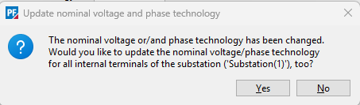
Det er viktig å merke seg at transformatorens LV-side (lavspenningsside) og HV-side (høyspenningsside) må kobles til riktig samleskinne. Dersom tilkoblingen er feil, vil en feilmelding oppstå. Denne feilen kan rettes ved å velge Flip Connection i transformatorens egenskapsvindu.
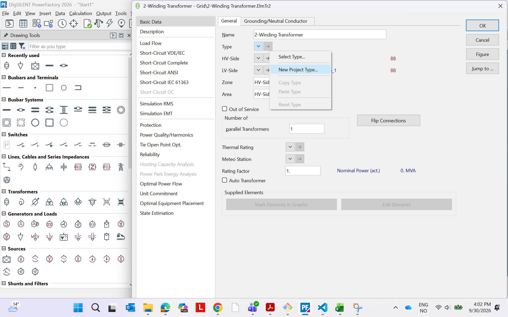
Som siste trinn dobbeltklikker du på komponenten General Load for å åpne egenskapsvinduet. Velg deretter fanen Load Flow i menyen på venstre side og angi aktivt effektforbruk til 1 MW.
Det er verdt å merke seg at det ikke er obligatorisk å definere egne typer for samleskinner og laster. For de fleste andre komponenter i PowerFactory er imidlertid denne typeangivelsen påkrevd.
Når alle disse trinnene er gjennomført, er kraftsystemmodellen korrekt konfigurert og klar for videre analyser.
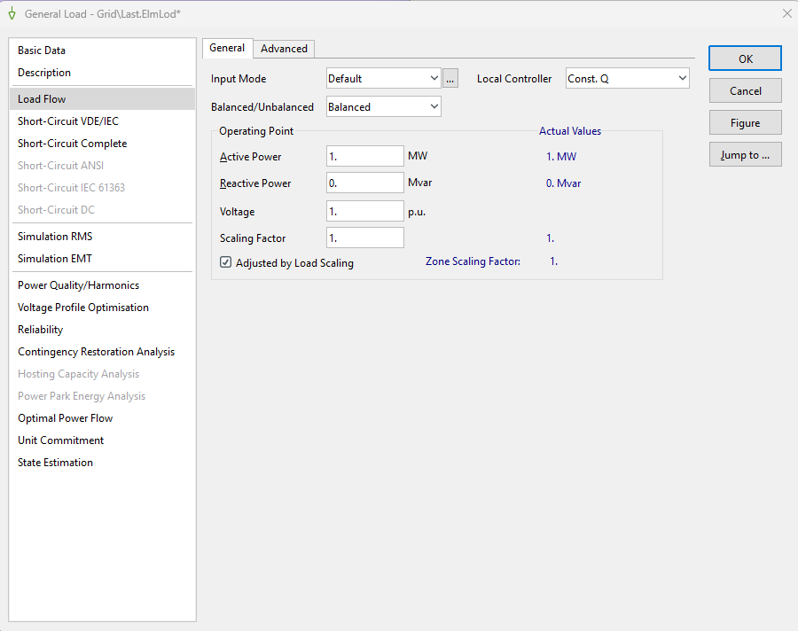
Kjør lastflyt#
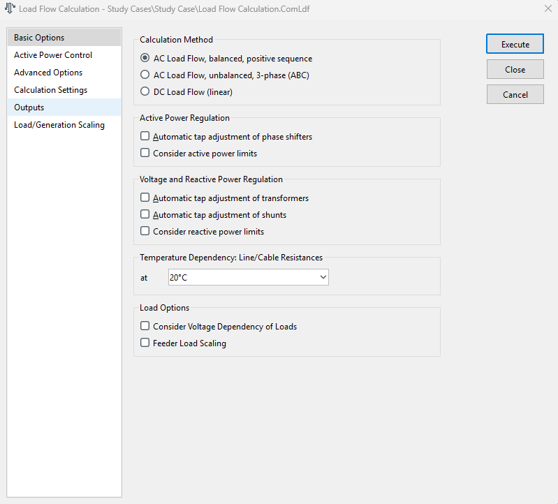
Analyser resultat#
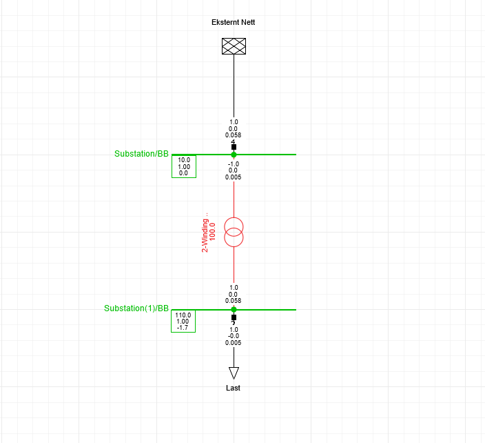
LAB3#
ELK330 – Early Stage Assessment: Individuelt prosjektforslag#
Formål#
Denne oppgaven skal sikre at studenten kommer tidlig i gang med prosjektarbeidet og mottar tilbakemelding på prosjektets faglige innhold, omfang og gjennomførbarhet.
Prosjektforslaget skal samtidig gi trening i de samme arbeidsformene og dokumentasjonskravene som benyttes i den avsluttende prosjektrapporten.
Oppgaven skal bidra til at studenten utvikler en tydelig plan for modellering, simulering, analyse og refleksjon før hovedprosjektet gjennomføres.
Valg av prosjekt#
Studenten kan velge å arbeide med en av de anbefalte prosjektretningene i emnet:
Kortslutningsanalyse og vernkoordinering
Integrering av IBR i distribusjonsnettet
Studenten står også fritt til å foreslå et eget prosjekt.
Egenvalgte prosjekter skal være relevante for ett eller flere av læringsutbyttene i ELK330 og ha et omfang som er gjennomførbart innenfor emnets rammer. Det forventes at prosjektet inneholder modellering, simulering og analyse av elektriske anlegg eller kraftsystemer.
Ved tvil om prosjektets relevans eller omfang bør faglærer kontaktes tidlig i prosessen
Innlevering#
Oppgaven er individuell.
Besvarelsen skal skrives i LaTeX og leveres som PDF i Canvas.
Krav til innhold#
Prosjektforslaget skal inneholde følgende deler.
1. Prosjekttittel#
En kort og presis tittel som beskriver prosjektets innhold.
2. Problemstilling#
Beskriv:
hvilket problem som skal undersøkes
hvorfor problemstillingen er relevant
hvilke faglige spørsmål prosjektet skal besvare
3. Målsetting#
Beskriv:
hovedmål
delmål
forventede resultater
4. Faglig bakgrunn og litteratursøk#
Presenter relevant teori og tidligere arbeid.
Denne delen skal inneholde:
beskrivelse av gjennomført litteratursøk
relevante lærebøker
vitenskapelige artikler
rapporter, standarder eller teknisk dokumentasjon der dette er relevant
Referanser skal håndteres ved hjelp av BibTeX og presenteres etter IEEE-standarden.
Referanser#
Det skal benyttes BibTeX for håndtering av referanser. Referanser og siteringer skal følge IEEE-stilen.
IEEE-stilen benytter nummererte referanser i teksten og bruk pakken hyperref:
Lastflytanalyse er et grunnleggende verktøy innen kraftsystemanalyse [1].
Integrasjon av distribuert produksjon kan påvirke spenningsprofilen i distribusjonsnettet [2], [3].
Referansene nummereres etter første forekomst i dokumentet og listes samlet i referanselisten.
Eksempel på referanser:
[1] O. I. Elgerd, Electric Energy Systems Theory: An Introduction. New York, NY, USA: McGraw-Hill, 1982.
[2] P. Kundur, Power System Stability and Control. New York, NY, USA: McGraw-Hill, 1994.
[3] IEEE Power & Energy Society, “IEEE Recommended Practice for Industrial and Commercial Power System Analysis,” IEEE Std 3002.2-2018, 2018.
Det forventes at studenten benytter relevante faglige kilder, som for eksempel:
vitenskapelige artikler
IEEE-standarder
IEC-standarder
lærebøker
tekniske rapporter
produsentdokumentasjon
Bruk av generative KI-verktøy skal oppgis i henhold til emnets retningslinjer. KI-verktøy regnes normalt ikke som faglige primærkilder.
5. Planlagt modellering#
Beskriv:
hvilken type kraftsystem som skal modelleres
hvilke komponenter som skal inngå
hvilke antakelser og forenklinger som planlegges
Studenten skal diskutere hvordan modellen forventes å representere virkeligheten.
6. Planlagte simuleringer#
Beskriv:
hvilke analyser som skal gjennomføres
hvilke scenarioer som skal undersøkes
hvilke resultater som forventes å være interessante
7. Refleksjon rundt modellen#
Diskuter kort:
modellens underrepresentasjon
modellens overrepresentasjon
Diskusjonen skal knyttes til teorien om modeller og digitale modeller som er gjennomgått i emnet.
8. Gjennomføringsplan#
Beskriv:
planlagte milepæler
framdriftsplan
forventet arbeidsinnsats
Studenten skal estimere hvor mange timer som planlegges brukt på prosjektarbeidet fram mot innlevering av sluttrapporten.
Estimert arbeidsinnsats skal begrunnes ut fra prosjektets omfang og faglige ambisjon.
9. Modellambisjon#
Med utgangspunkt i forelesningen om digitale modeller skal studenten reflektere over prosjektets planlagte nivå av:
kompleksitet
integrasjon
Studenten skal begrunne hvor i disse dimensjonene prosjektet forventes å befinne seg og hvorfor.
I refleksjonen bør følgende vurderes:
antall komponenter og delsystemer som inngår i modellen
detaljnivået i representasjonen
graden av samspill mellom ulike tekniske systemer
om modellen primært representerer et enkeltstående system eller et integrert kraftsystem
hvilke konsekvenser modellvalgene kan ha for analysemulighetene og resultatene
Denne vurderingen trenger ikke være omfattende, men skal vise at studenten har reflektert over modellens plassering med hensyn til integrasjon og kompleksitet.
Formelle krav#
Studenten skal demonstrere:
bruk av LaTeX
korrekt figur- og tabellnummerering
korrekt kryssreferering
bruk av hyperreferanser
korrekt akademisk kildebruk
bruk av BibTeX
Besvarelsen skal kompileres uten feil som påvirker PDF-dokumentet.
Alle figurer, tabeller, ligninger, referanser og hyperlenker skal være korrekt referert fra teksten.
Følgende skal leveres:
PDF-rapport
LaTeX-kildekode
BibTeX-fil
lenke til Git-repositorium
Git-logg som dokumenterer arbeidet fram til innlevering
Ønsket innleveringsform#
Pdf i kodet i Latex
Webside (jupyter book) basert på ferdigprodusert mal
Merk at begge disse innleveringsformene bygger på
LaTeX-kildekode kombinert med markdown
BibTeX-fil
lenke til Git-repositorium
Git-logg som dokumenterer arbeidet fram til innlevering
Omfang#
Prosjektforslaget skal normalt være på 1-3 sider eksklusive referanser og vedlegg.
Studenten skal vise evne til å formulere et gjennomførbart prosjekt, begrunne faglige valg, identifisere aktuelle modellerings- og simuleringsaktiviteter, samt reflektere over modellens begrensninger.
Det er kvaliteten på problemstillingen, planleggingen og den faglige refleksjonen som vurderes, ikke dokumentets lengde.
Vurderingskriterier#
Prosjektforslaget vurderes ut fra:
Faglig relevans.
Tydelig problemstilling og målsetting.
Kvalitet på litteratursøk og kildegrunnlag.
Kvalitet på planlagt modellering og simulering.
Refleksjon omkring modeller og modellbegrensninger.
Begrunnelse for valgt nivå av integrasjon og kompleksitet.
Realistisk vurdering av prosjektomfang og arbeidsinnsats.
Struktur og kvalitet på dokumentasjonen.
Korrekt bruk av LaTeX, BibTeX og Git.
Tilbakemeldingen skal gi grunnlag for videre utvikling av prosjektet og den avsluttende